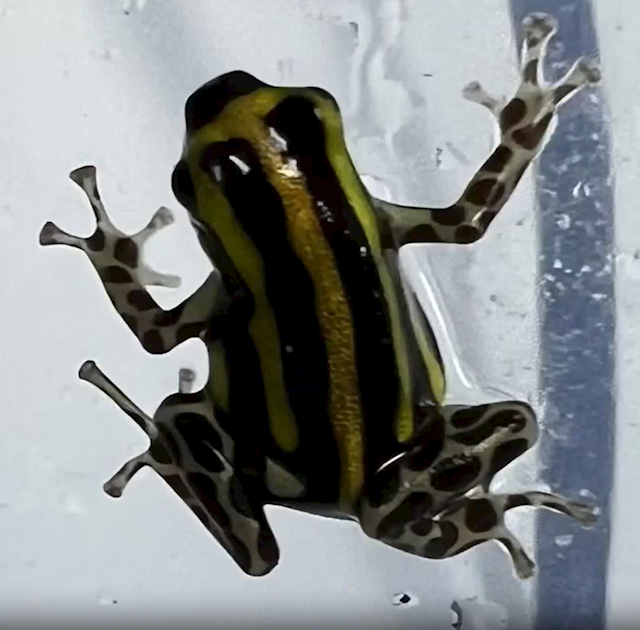

大新闻
男子划船时被鲸鱼吞下又被吐出，父亲拍下惊险瞬间！
近日，一名勇敢的男子在划船时经历了一场惊心动魄的奇遇：他竟然被一只鲸鱼吞下，然后又被吐了出来！这一连串惊险的事件被他的父亲用手机完整记录下来，视频上传后引发了广大网民的热议，成为了近期网络上的热门话题。
这一切发生在美国加利福尼亚州海域的沿岸，23岁的划船者杰克·史密斯正驾着小船享受着阳光与海风，没想到突如其来的一幕打破了平静。杰克在视频中清楚地记录了鲸鱼将他吞入嘴中的瞬间，那一刻的惊慌与诡异交织在一起，让人不禁捏紧了拳头。
杰克的父亲正好在岸上拍摄，目睹了这一切。父亲的心情也可想而知，他既担心儿子的安危又无法移开视线。虽然这一幕看起来像是电影中的特技，但它却真实发生在了男孩身上。幸运的是，鲸鱼似乎意识到这个人类的存在，并在吞下后迅速将他吐出，杰克相对毫发无伤，最终平安离开。
这一事件引发了热烈的讨论，许多网友在社交平台上表达了他们的感受。“这太惊险了，我都替他捏了一把汗！”一位网友评论道。而有些人则开玩笑说，杰克简直是与鲸鱼共享了一次奇妙的亲密接触，不少人开始调侃他成了 "鲸鱼的好朋友"。
瞬间致命且无解药：海关截获世界上毒性最强活体毒蛙
快科技2月14日消息，据“海关发布”官方通报，近日，上海浦东国际机场海关在对入境航班旅客开展监管过程中，发现一名选择无申报通道通关的旅客随身行李机检图像异常。
经开箱查验，截获活体蛙类和蚂蚁、蜘蛛、蜚蠊、果蝇等活体动物。
经上海海关动植物与食品检验检疫中心鉴定，上述动物为兹米尔曼箭毒蛙、网纹箭毒蛙、瞻星蛙属蛙、弓背蚁、巴西彩树捕鸟蛛、巴西黄斑粉趾蜘蛛、侧缘佘氏蠊、海德氏果蝇。
其中兹米尔曼箭毒蛙、网纹箭毒蛙、巴西彩树捕鸟蛛、巴西黄斑粉趾蜘蛛、侧缘佘氏蠊、海德氏果蝇等物种在我国没有发生报道，属外来物种。

刘敬楷
大傻逼